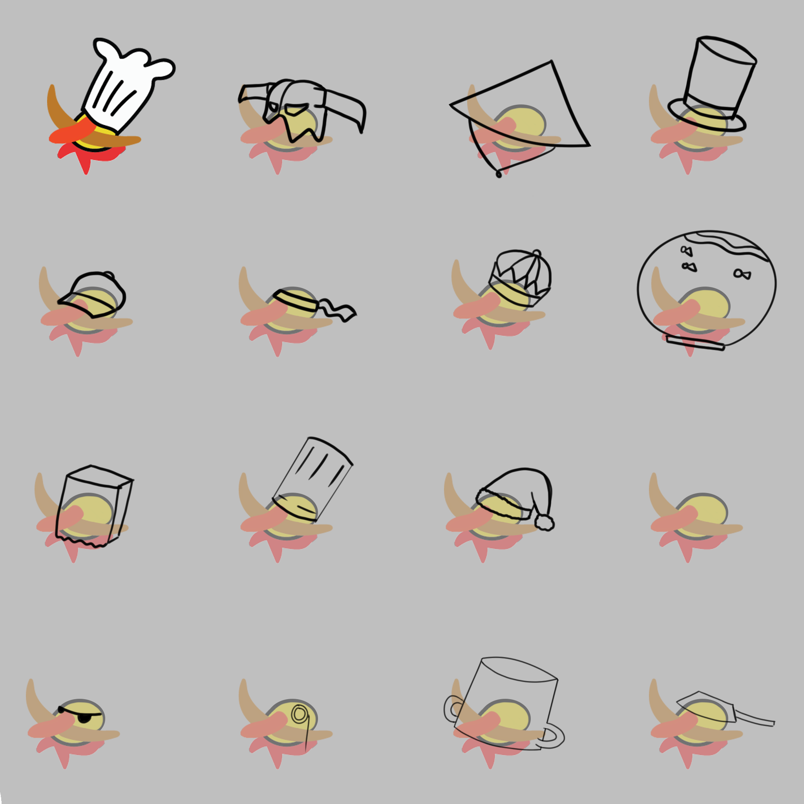
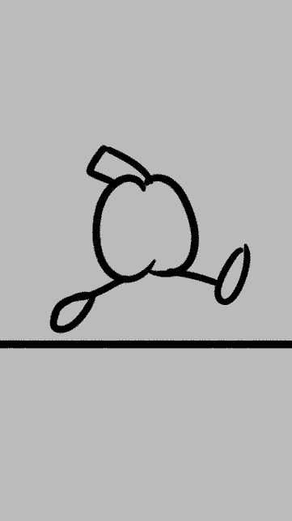
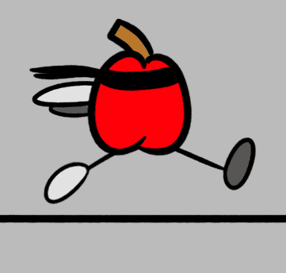
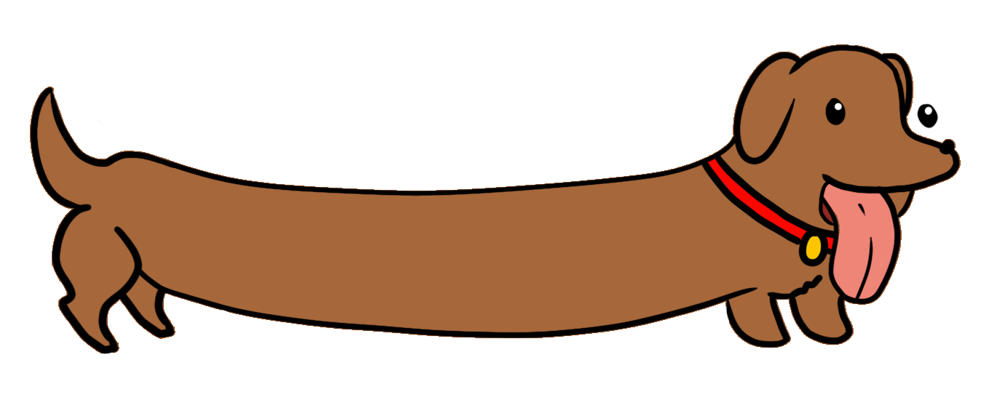
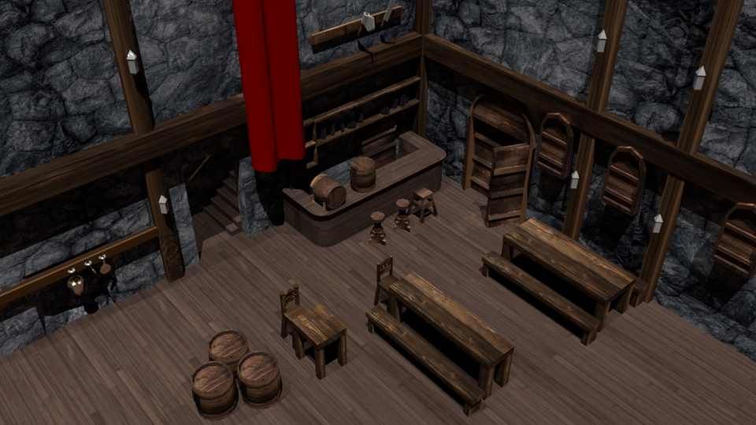
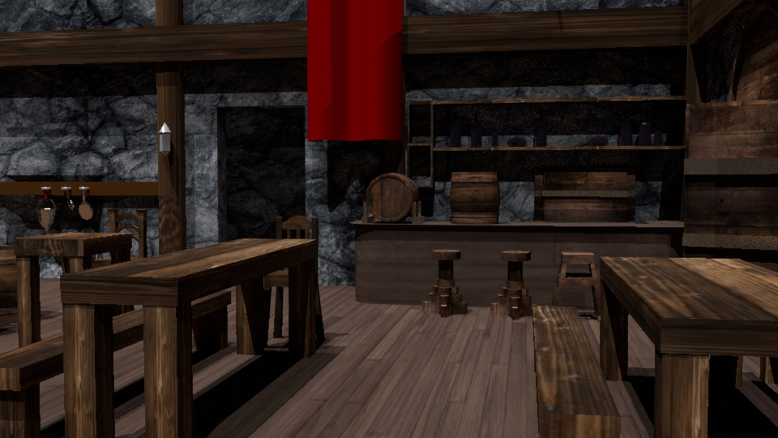
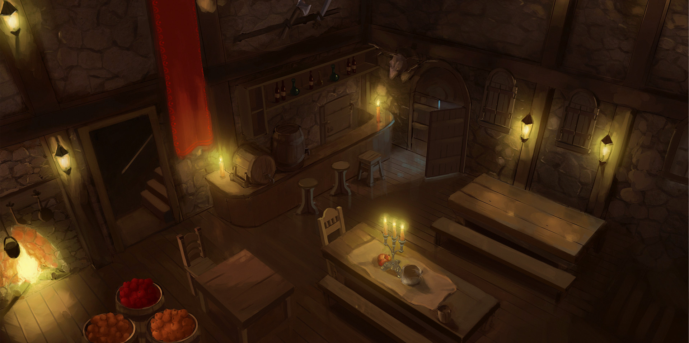

"Mess up once, it looks ugly. Mess up many times, then it becomes your style" - unknown



Of Bread and Butter is a multiplayer prop hunt game developed by a team of 6: Andrew, Edward, Thomas, Rafael, Caitlyn, and Christian (me) at SJSU's GameDev Club.
Link to the official OBaB website: www.ofbreadandbutter.com

Dog-n-Found was a story about a VERY LONG lost dog trying to find it's owner by helping out others who would help in return. This game was made by Adrian, Nathan, Ryan, Gokul, and Christian (me).
Link to the game: Dog-N-Found



Concept art illustration made by Henrique Paiva. Henrique's Art Station Link
This was a project I made during my time at De Anza and created using maya. The purpose of the project was to use a 2D environmental concept and model it in a 3D space. Here I used the concept art made by Henrique Paiva and modeled, textured, and rendered his work in 3D.